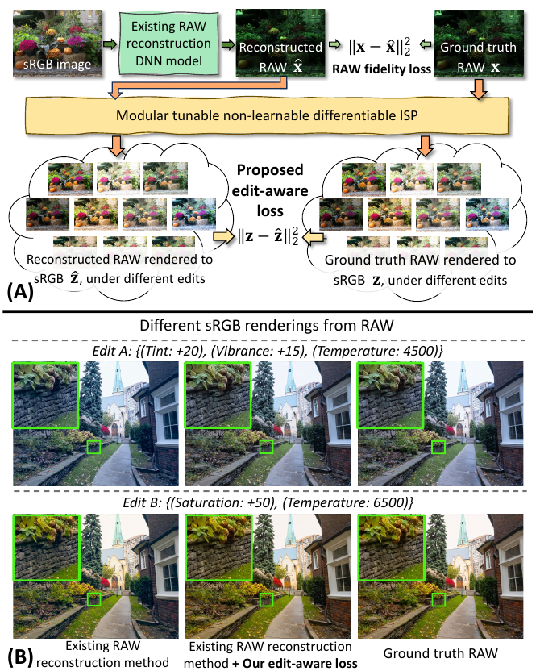
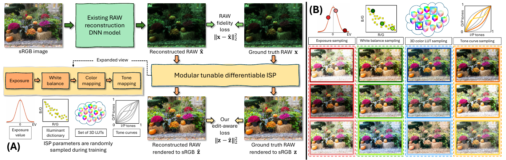
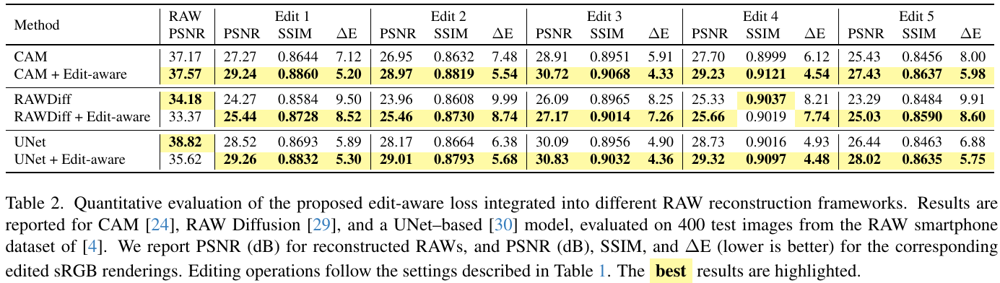
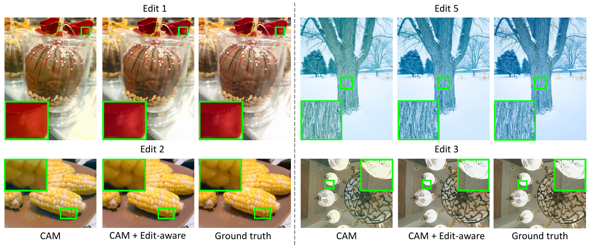
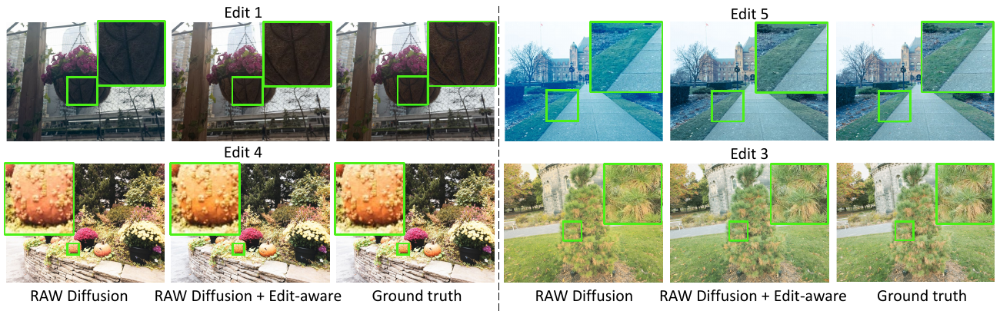
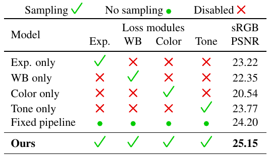

Edit-aware RAW Reconstruction
代码说明：官方仓库 SamsungLabs/edit-aware-raw（本页基于 commit e597e1b，2026-06-05）。论文 PDF 和 arXiv 页都没有给代码链接，这个仓库是按标题在 GitHub 上找到的，README 自称官方实现，作者署名与论文一致。仓库只包含 UNet 这一组实验：可微 ISP 和参数采样（edit_aware_loss.py）、训练、测试、单图微调、把重建 RAW 写进 S24 Ultra DNG 容器的工具，以及按 Photoshop 渲染结果算指标的脚本。CAM 和 RAW-Diffusion 接入这项损失的代码、任何训练好的权重都没有发布；Photoshop 批处理的操作说明在 README 里还标着「link to be added」。训练和测试数据是公开的 S24 Raw-sRGB 数据集（SamsungLabs/time-aware-awb）。仓库根目录的 LICENSE.md 是 CC BY-NC-SA 4.0，各源文件头写的却是 CC BY-NC 4.0。本页的论文页码和表号按 arXiv v2（2026-04-23，含补充材料）；正文与 CVF 开放获取版逐字比对过，除参考文献编号外一致。
专项定位：本页属于「手机照片 → 相机画质：细节与质感迁移」专项（入口：phone2camera-2026 调研页）。专项已经读过四种 sRGB → RAW：unprocessing-2018 手写逆 ISP，raw-diffusion-2024 像素空间条件扩散，raw-flow-2026 潜空间确定性流匹配，rawgen-2026 用「多渲染锚定」处理未知修图。前三篇的共同问题是训练和测试的 RGB 都由固定参数（rawpy 默认）从同一张 RAW 渲染。本文同出 Brown 组，把 RAW-Diffusion 当作被增强的基线之一。它换了一个角度：不管输入是怎么渲染出来的，而是问重建出来的 RAW 之后被各种方式渲染时还准不准。本页要回答：这项损失改变了什么，它对「用 RGB → RAW 造训练数据」意味着什么，和 RawGen 的思路有什么异同。

问题
RAW 重建的损失都在 RAW 域，用户却要在 sRGB 里看修图结果。RAW 里同样大小的误差，落在暗部会被 gamma 和提亮放大，落在会被截断的高光里则看不见（§1、§2.1）。
做法
四个模块的可微 ISP：曝光、白平衡 + 色彩矩阵、3D LUT、色调曲线。参数每次随机抽，真值和重建走同一组参数，误差在 sRGB 里算，再按权重 λ 加到原损失上（§2.2）。
证据
Photoshop 的五种编辑下，三个模型的编辑后 PSNR 都提升，最多约 2 dB；代价是 RAW PSNR 可能下降。随机采样比固定管线多 0.95 dB（§3）。
给本专项的结论
它让重建 RAW 的颜色和影调在再渲染后更准，不产生噪声和纹理。可借的是「把损失放到最终会经过的渲染之后去算」这个写法和 DNG + ACR 评测流程（§6）。
1. 出发点 (Motivation)
手机图库里的照片是机内 ISP 的成片，通常是 8-bit sRGB JPEG。用户经常不满意默认风格或自动参数，想事后修图。在 RAW 上修更准、余地更大：RAW 是线性的、位深高、动态范围大；成片已经过色调压缩、截断和量化，很多操作不可逆（§1）。但 RAW 文件太大，很少有人保留。所以才有 RAW 重建：从 sRGB 恢复 RAW。
现有方法分两类（§1、§2）：
- 元数据辅助：拍摄时额外存一点信息，比如稀疏采样的 RAW 像素（CAM 等）或压缩的 RAW 潜变量，推理时拿 sRGB 加这份元数据恢复 RAW。精度更高，但需要相机端配合。
- 盲重建：只看 sRGB，例如 UPI（即 unprocessing-2018）、CIE XYZ Net、InvISP、CycleISP，以及扩散模型 raw-diffusion-2024。
论文指出，这两类方法几乎都只优化逐像素的 RAW 误差。少数「正向 + 逆向」联合训练的方法加了循环一致性损失，把恢复的 RAW 渲染回去和输入 sRGB 比，但监督信号始终是那张没编辑过的输入，管不到用户之后要换的风格。另有 ReRAW（reraw-2025）为目标检测定制 RAW 重建，目标和摄影编辑不一致。本文的主张是：消费级场景下 RAW 重建的主要用途是修图，训练目标就该对着修图之后的 sRGB 来定。
这里有一个容易忽略的事实：RAW 域的 L2 和人眼看到的误差分布很不一样。线性 RAW 里暗部像素的数值很小，同样的绝对误差在 RAW 域里微不足道，渲染时经过 gamma 和提亮却会被放大很多倍；高光在渲染时常被截断，RAW 里的误差反而不可见。§2.1 用数字说明这一点。
RAW 重建（de-rendering）
从相机输出的 sRGB 图反推出传感器的线性 RAW 值，本文里指已去马赛克、已降噪的 3 通道线性 RAW。
元数据辅助 / 盲重建
前者拍摄时多存一点 RAW 信息（例如 1.5% 的像素）帮助恢复；后者只有 sRGB 一张图。
ASN（AsShotNeutral）
DNG 里记录的「相机估计的光源颜色」，形式是 [r/g, 1, b/g]，白平衡就是逐通道除以它。
ColorMatrix / ForwardMatrix
DNG 里两组出厂标定的 3×3 矩阵，分别在两种标准光源下给出相机 RGB 与 CIE XYZ 之间的换算，中间色温按 1/CCT 插值。
CCT（相关色温）
用一个开尔文数描述光源偏暖还是偏冷，3000K 偏黄，6500K 接近日光。
3D LUT
三维颜色查找表，把每个输入 RGB 映射成一个输出 RGB，是修图软件「预设 / 滤镜」的常见实现。
NILUT
用一个小 MLP 拟合 3D LUT，使颜色映射连续、可微，能放进训练里反传梯度。
EV（曝光值）
曝光调整的档位，+1 EV 表示亮度乘 2，−1 EV 表示除以 2。
ΔE
CIELAB 空间里两种颜色的欧氏距离，越小越接近。
ACR（Adobe Camera Raw）
Photoshop / Lightroom 里处理 RAW 的模块，本文用它对 DNG 施加编辑并渲染，当作「训练时没见过的真实 ISP」。
2. 方法 (Method)

2.1 损失：同一组随机参数，把两张 RAW 各渲染一遍
记真值 RAW 为 \(\mathbf x\)，机内 ISP 渲染出的 sRGB 为 \(\mathbf y\)，重建网络为 \(f_\theta\)。原来的训练目标是 RAW 域的 L2（论文 Eq. 1–2）。本文增加一项：
—— 翻译: 网络从 sRGB 猜出 RAW；然后用同一台「模拟修图机」g、同一组旋钮 φ，把真 RAW 和猜的 RAW 各洗一张照片，比两张照片差多少。旋钮 φ 不训练，每次随机拧。
—— 翻译: 总损失 = 原来的 RAW 误差 + 原方法自带的其他项（例如 CAM 的超像素损失）+ λ 倍的「修图后误差」。CAM 用 λ=2，RAW-Diffusion 用 λ=4；UNet 实验干脆去掉第一项，只留修图后误差（论文 §3.5、§4）。
\(g_\phi\) 由四个模块串成，\(\phi=(\varepsilon,\boldsymbol\omega,\rho,\tau)\) 分别是曝光值、光源、LUT 编号、色调多项式阶数（论文 Eq. 4）：
—— 翻译: 先调曝光，再做白平衡并转到 CIE XYZ，再套一个颜色风格 LUT，最后套色调曲线、转 sRGB、加 gamma。黑白电平、去马赛克、降噪都不在里面，因为重建网络输出的已经是归一化、去马赛克、降噪后的 3 通道 RAW。
类比：同一张底片交给不同的暗房师傅冲印，评委只看冲出来的照片。以前的做法是拿两张底片的灰度逐点比；现在是随机请一位师傅，把真底片和仿制底片都冲一遍，比照片。仿制底片哪里做得不好，要看它在冲印之后是否显形。
为什么这会改变误差的分布（本页的推导，论文没有写）。对固定的 φ，误差 \(\mathbf e = \hat{\mathbf x}-\mathbf x\) 较小时，
—— 翻译: 修图后误差约等于「RAW 误差乘上渲染曲线在该像素处的斜率」。随机修图取平均后，相当于给每个像素的 RAW 误差配一个 3×3 权重矩阵，权重取决于这个像素有多亮、什么颜色。普通的 RAW L2 对应权重矩阵恒为单位阵。
拿最后一步 gamma（指数 1/2.2）算个数。它的斜率是 \(\tfrac{1}{2.2}v^{-1.2/2.2}\)：线性值 0.01 处约 5.6，0.5 处约 0.66，相差 8.4 倍。具体例子：暗部像素真值 0.010、重建 0.012，亮部像素真值 0.500、重建 0.502，RAW 域误差都是 0.002；过 gamma 后暗部差 0.0107，亮部差 0.0013，相差 8 倍，平方后约 64 倍。再随机提亮 +1 EV，亮部像素乘 2 到了 1.0 以上，被截断，误差变成 0；暗部的误差反而更大（0.0146）。所以这项损失把力气花在暗部、中间调和接近中性的颜色上，对会被截断的高光几乎不管。§3 里「RAW PSNR 下降、sRGB PSNR 上升」的取舍，以及基线在暗部出现的色带（banding），都可以从这里理解：RAW PSNR 主要由亮部的绝对误差决定，而修图后看到的问题集中在暗部和颜色。
训练循环里，这项损失就是在原来的 RAW 损失旁边多算一次渲染：
repo/train.py:L64-L78 — 每个 batch：拼元数据通道、前向、RAW 损失、随机渲染后的 sRGB 损失、按 rlambda/slambda 加权
# stack the tiny-raw metadata as extra input channels
input_images = stack_metadata_to_input(input_images, target_images, asn, config)
optimizer.zero_grad()
outputs = model(input_images)
# raw-domain loss
raw_loss = criterion(outputs, target_images)
# edit-aware sRGB-domain loss: render both recon and GT through the sampled ISP
outputs_srgb, targets_srgb = render_srgb(outputs, target_images, asn, xyz2cam, config)
srgb_loss = criterion(outputs_srgb, targets_srgb)
loss = config.rlambda * raw_loss + config.slambda * srgb_loss
loss.backward()
optimizer.step()
和论文的对应：rlambda、slambda 就是 Eq. 11 的两个权重。发布的两份配置正好是论文 UNet 实验的两端：raw_1_srgb_0.yaml（只有 RAW 损失，基线）和 raw_0_srgb_1.yaml（只有 sRGB 损失）。有一处不一致：论文说两项都是 ℓ2，配置里 loss_fn: mixed，criterion 是 0.8·L1 + 0.2·MSE（repo/train.py:L47-L49），RAW 损失和 sRGB 损失都用它。
2.2 可微 ISP 的四个模块和参数分布
整条渲染在代码里只有二十几行，顺序和论文 Eq. 4 一致：
repo/edit_aware_loss.py:L492-L516 — g_φ 本体：EV → 白平衡 + 相机→XYZ → 3D LUT → Adobe 色调曲线 + 随机多项式 → XYZ→sRGB + gamma
def render_srgb_stages(batch, config, sampled_params, is_train=False):
"""
Apply the ISP stages with the given sampled parameters:
raw -> EV -> WB -> cam2xyz(XYZ) -> 3D LUT -> tone curve -> sRGB -> gamma.
Each module is gated by its config flag.
"""
if config.ev_sampling:
batch = apply_ev(batch, sampled_params['rand_ev'])
if config.wb_sampling:
batch = apply_wb(batch, sampled_params['sampled_wb'])
batch = apply_3x3_mat_torch(batch, sampled_params['sampled_cam2xyz'])
if config.lut_sampling:
batch = apply_nilut(batch.to(torch.float64), sampled_params['sampled_lut'], is_train)
if config.tone_sampling:
batch = apply_tc_nilut(batch.to(torch.float64), sampled_params['fw_adobe_tc'], is_train)
batch = sampled_params['sampled_tc'](batch)
# apply sRGB matrix + gamma
batch = apply_3x3_mat_torch_same(batch, xyz2srgb)
batch = torch.clip(batch, 0.0, 1.0) ** (1 / 2.2)
return batch
两个细节值得注意。第一，XYZ → sRGB 矩阵和 gamma 写在色调模块的 if 里面，关掉色调模块就连 gamma 一起关了，损失回到线性空间（这和 §3 的消融有关）。第二，这里没有显式截断，截断发生在两个 NILUT 里：它们的输出是 clamp(MLP(x)+x, 0, 1)（repo/edit_aware_loss.py:L278-L282），提亮后超过 1 的像素梯度为 0。参数在 render_srgb 里抽：
repo/edit_aware_loss.py:L457-L489 — 参数采样：EV 逐图正态抽样，白平衡逐图在 ASN 邻域抽，色调曲线和 LUT 每个 batch 各抽一个
sampled_params = {}
shape = outputs.shape[0]
if config.ev_sampling:
if config.ev_sampling_mode == 'uniform':
rand_ev = (config.ev_max - config.ev_min) * torch.rand(shape) + config.ev_min
elif config.ev_sampling_mode == 'normal':
rand_ev = torch.normal(torch.zeros((shape)), std=config.ev_normal_sampling_std)
else:
raise ValueError('unrecognized ev sampling mode')
sampled_params['rand_ev'] = rand_ev.to(device)
if config.wb_sampling:
if config.wb_sampling_mode == 'neighbourhood':
sampled_wb, sampled_cam2xyz = sample_illuminant(
shape, mode='neighbourhood', asn=asn, distance=config.wb_sampling_distance)
elif config.wb_sampling_mode == 'use_given':
sampled_wb, sampled_cam2xyz = asn, torch.linalg.inv(xyz2cam)
else:
raise ValueError('unrecognized wb sampling mode')
sampled_params.update({'sampled_wb': sampled_wb, 'sampled_cam2xyz': sampled_cam2xyz})
if config.tone_sampling:
sampled_params['fw_adobe_tc'] = config.tc_nilut
sampled_params['sampled_tc'] = RandomToneCurve(config.tc_sampling_max_poly_degree,
linear_tone_curve=linear_tone_curve)
if config.lut_sampling:
sampled_params['sampled_lut'] = sample_nilut(config.lut_nilut, config.lut_as_is_percent)
outputs_srgb = render_srgb_stages(outputs, config, sampled_params, is_train=True)
targets_srgb = render_srgb_stages(targets, config, sampled_params)
return outputs_srgb, targets_srgb
下面逐个模块对照论文与代码。
(i) 曝光（论文 Eq. 5）：
—— 翻译: 整张 RAW 乘以 2 的 ε 次方。ε 以 0 为中心，标准差 0.75 档，约 95% 的样本落在 ±1.5 EV 以内。每张图各抽一次，真值和重建用同一个 ε。
代码与论文一致（ev_normal_sampling_std: 0.75）；正态模式下 ev_max/ev_min 不起作用，不截断。
(ii) 白平衡 + 色彩空间变换（论文 Eq. 6–8）：
—— 翻译: 论文的写法：把训练集 2,619 张图的 ASN 当作「光源字典」，拟合 [r/g, b/g] 的二维高斯；抽一个光源 ω，要求它落在字典的凸包里、且离本图 ASN 不远（补充材料写的是 l1 距离 ≤ 0.05）。W 是按 ω 构造的对角白平衡矩阵，C 是按 ω 的色温在两组出厂矩阵间插值得到的「相机 RGB → XYZ」矩阵。
发布代码没有字典、高斯和凸包，直接在 ASN 上加均匀噪声：
repo/edit_aware_loss.py:L243-L258 — 白平衡采样：每个通道在 ASN 上加 U(−0.05, 0.05)，再按新光源的色温插值出 cam2xyz
arr_wb, arr_xyz = [], []
for b in range(batch_size):
if mode == 'neighbourhood':
asn_b = asn[b, :].detach().cpu().numpy()
wb_vec = asn_b + np.random.uniform(-distance, distance, size=asn_b.shape)
else:
raise ValueError(f'unrecognized wb sampling mode: {mode}')
xyz2cam = get_inverse_color_space_transform_matrix(wb_vec)
cam2xyz = np.linalg.inv(xyz2cam)
arr_wb.append(wb_vec)
arr_xyz.append(cam2xyz)
arr_wb = torch.from_numpy(np.array(arr_wb).astype(np.float64)).to(device)
arr_xyz = torch.from_numpy(np.array(arr_xyz).astype(np.float64)).to(device)
return arr_wb, arr_xyz
函数的 docstring 自己承认「论文的凸包方案较慢，这里为效率跳过」（L233-L241）。差别有三点：分布从「以训练集为中心的高斯」变成「以本图 ASN 为中心的盒子」；asn 是 3 维的 [r/g, 1, b/g]，G 通道也被扰动了 ±5%，论文只在二维色度上采样；「邻域」的定义在正文是欧氏距离、补充材料是 l1 ≤ 0.05、代码是每通道 ±0.05（L∞ 盒子），三处各不相同。色温插值用 DNG 的标准做法：先由 ColorMatrix 迭代求出光源的 CCT，再在 D65 与 A 光两组 ForwardMatrix 之间按 1/CCT 线性插值（L156-L202）。这里有一个小毛病，见 §4 第 5 条。
(iii) 颜色：3D LUT（论文 Eq. 9）：
—— 翻译: 准备 15 个修图风格 LUT，每个先离线用一个 MLP（NILUT）拟合成可微函数并冻结；训练时每个 batch 随机挑一个套上。注意它作用在 XYZ 上，不是 sRGB 上。
代码不是均匀抽样：30% 的 batch 固定用 LUT_00（文件里叫「AS_IS」），其余 70% 在另外 14 个里均匀抽（repo/edit_aware_loss.py:L316-L324，配置 lut_as_is_percent: 30）。finetune.py:L248 的注释把 LUT_00 称作「identity LUT」，但我加载权重实测，它不是恒等映射：在 sRGB 色域对应的 XYZ 值上平均改变 0.063，最大 0.31；一个 Y=0.73 的 D50 中性灰经过它变成 Y=0.80、Z 从 0.60 降到 0.48，明显偏黄偏亮。它更像一种默认观感，而不是「不做颜色处理」。我另测了 LUT_01、LUT_04、LUT_07，在同一组 XYZ 值上的平均改变量都在 0.15 左右，幅度更大。
(iv) 色调映射（论文 Eq. 10）：
—— 翻译: ψ 是一个拟合 Adobe 默认色调曲线的小 MLP，S 是随机生成的单调不减多项式（阶数 τ），T 是固定的 XYZ → 线性 sRGB 矩阵，最后开 2.2 次方根当 gamma。三个通道套同一条曲线。
我用发布的 tc_forward.pt 实测 ψ：线性 0.18 → 0.388，0.5 → 0.805，是一条很亮的曲线，相当于中灰在 gamma 之后到 0.65 左右。随机多项式的代码：
repo/edit_aware_loss.py:L371-L391 — 随机色调曲线：在 [0,1] 上随机取控制点作为「导数」，拟合多项式后积分并归一，导数出现负值就重抽
@staticmethod
def sample_tone_curve(max_deriv_poly_degree: int = 2) -> List[float]:
while True:
num_control_points = np.random.randint(2, max_deriv_poly_degree + 1)
x_values = np.linspace(0, 1, num_control_points)
y_values = np.random.rand(num_control_points)
control_points = list(zip(x_values, y_values))
tc_poly, deriv_tc_poly = RandomToneCurve._fit_tone_curve(control_points)
if np.any(deriv_tc_poly(np.linspace(0, 1, 200)) < 0):
continue
return control_points, tc_poly, deriv_tc_poly
@staticmethod
def _fit_tone_curve(control_points: List[Tuple[float, float]]) -> List[float]:
control_points = sorted(control_points, key=lambda x: x[0])
x_values = [p[0] for p in control_points]
y_values = [p[1] for p in control_points]
deriv_tc_poly = Polynomial.fit(x_values, y_values, len(control_points) - 1).convert()
tc_poly = deriv_tc_poly.integ()
tc_poly = tc_poly / tc_poly(1) # scale to pass through (1, 1)
return tc_poly, deriv_tc_poly
构造方法很巧：随机的是导数，导数非负就保证曲线单调；积分常数为 0、再除以 S(1)，曲线必过 (0,0) 和 (1,1)。和论文的出入在阶数和幅度。配置 tc_sampling_max_poly_degree: 5 时，max_deriv_poly_degree 是 4，np.random.randint(2, 5) 只能取 2、3、4 个控制点，积分后的多项式阶数只有 2、3、4，论文写的是 1 到 5。我把这两个函数逐行搬出来抽了 2 万条：阶数 2/3/4 各约三分之一；S(0.5) 的 5%–95% 分位是 0.27–0.73，28% 的曲线把中间调挪动超过 0.15。论文说这是围绕 Adobe 曲线的「随机扰动」，实际幅度相当大。另外，一个 batch 只实例化一条曲线（L481-L482），同一 batch 的 32 个 patch 共用；论文 §3.4 说「对每个 patch 随机采样色调曲线」能带来一点局部色调映射的鲁棒性，与代码不符。
把论文和代码对照汇总：
| 模块 | 论文 | 发布代码 | 影响 |
|---|---|---|---|
| 曝光 | ε ~ N(0, 0.75²)，逐图 | 相同 | — |
| 白平衡 | 训练集 ASN 拟合二维高斯，限凸包内、离本图 ASN 不远 | ASN 每通道 ± U(0.05)，含 G 通道；无字典、无凸包 | 分布更窄、以本图为中心；多了绿色/品红方向的扰动 |
| 色彩矩阵 | 两组出厂矩阵按光源插值 | 相同，但 6504K 以上权重和大于 1 | 冷色温下多一点亮度缩放（§4） |
| 3D LUT | K=15 均匀抽 | 30% 固定 LUT_00，70% 在其余 14 个里抽 | LUT_00 并非恒等 |
| 色调 | Adobe 曲线 + 阶数 1–5 的随机多项式 | 阶数只有 2–4；每 batch 一条 | 幅度大于「扰动」一词的暗示 |
| 损失范数 | ℓ2 | 0.8·L1 + 0.2·MSE | 两项都换了 |
2.3 三个被增强的模型与训练设置
数据是 S24 Raw-sRGB 数据集（Afifi 等，ICCV 2025，原本为时间感知白平衡而建）：三星 S24 Ultra 主摄拍的 3,224 张，3000×4000，划分为 2,619 / 205 / 400（论文 §4）。按数据集 README，输入 sRGB 是机内 ISP 在 Pro 模式下出的 8-bit JPEG；目标 RAW 是去马赛克、减黑电平后的 16-bit 3 通道 PNG，并用 Lightroom 的 AI 降噪处理过（人工调整）。README 还提醒 sRGB 与 RAW 之间因机内裁切有轻微像素偏移，代码在读 RAW 时整体平移 1 个像素来校正（repo/dataloader.py:L77-L83）。
和专项里 RAW-Diffusion、RAW-Flow 的设定相比，这里的输入是真实机内 JPEG，不是 rawpy 默认渲染。但训练和测试仍然来自同一台手机、同一种拍摄模式，输入端的渲染方式是固定的；本文随机化的是输出之后的渲染，不是输入。
三个模型：
- CAM（Nam 等，CVPR 2022，元数据辅助）：拍摄时由学出来的采样器挑一部分 RAW 像素存下，解码器结合 sRGB 恢复全图。按原作者推荐的设置训练两份，加损失时 λ=2。
- RAW-Diffusion（raw-diffusion-2024，盲重建）：按原作者推荐的设置，λ=4。论文没有交代它原本输出打包的 RGGB，这里目标是 3 通道去马赛克 RAW，如何适配、编辑损失加在哪个时间步上，都没写。
- UNet（元数据辅助，本文自建）：元数据是 8× 下采样的 RAW（约 1.5% 的开销），双线性放大回原尺寸后与 sRGB 拼成 6 通道输入（
repo/edit_aware_loss.py:L422-L431）。基线只用 RAW 损失；加损失的版本只用 sRGB 损失、去掉 RAW 损失，作者的说法是检验这项损失单独能不能引导重建。训练用 Adam、学习率 1e-3、batch 32、patch 304、50 个 epoch（补充 S1）；代码实际是 AdamW、weight decay 1e-5（repo/train.py:L142）。
加这项损失后训练时间增加约 15%，推理不变（论文 §5）。
2.4 面向目标编辑的测试时微调
元数据辅助方法推理时手里有一点真 RAW（UNet 是下采样 RAW \(\mathbf x_d\)），可以对单张图微调。本文的损失让微调还能对准「用户接下来要做的那个编辑」（论文 §4.1）：
—— 翻译: 拿手上那张低分辨率真 RAW 当答案，把网络输出缩小到同一尺寸，两边过同一条 ISP 再比。φ 可以照训练时那样随机抽，也可以直接固定成目标编辑（比如 +2 EV、3000K），等于告诉网络「这张图之后要提亮两档、调成暖光，你把这个场景下会显形的部分做准」。
repo/finetune.py:L56-L74 — 面向目标编辑的微调：关掉所有随机性，色调曲线取线性、LUT 固定 LUT_00，EV 和白平衡锁定到目标值
# For edit-specific finetuning (EV and/or CCT): go through tone curve and LUT
# but with NO sampling (linear tone curve, AS_IS LUT 100%), and lock EV/WB.
if args.edit_specific_ev or args.edit_specific_cct:
config.tone_sampling = True
linear_tone_curve = True
config.lut_sampling = True
config.lut_as_is_percent = 100
config.ev_sampling = True
config.wb_sampling = True
config.ev_sampling_mode = 'uniform'
config.wb_sampling_mode = 'use_given' # use the given (asn or cct) WB, no sampling
else:
# plain per-image finetuning: follow the config, allow tone-curve perturbation
linear_tone_curve = False
if args.edit_specific_ev:
config.ev_max = config.ev_min = args.ev_value
if args.edit_specific_cct and not args.edit_specific_ev:
config.ev_max = config.ev_min = 0.0
把均匀分布的上下界设成同一个值，就把 EV 锁死了；色温编辑时，白平衡向量和 cam2xyz 从 wb_cct_dict.npy 里按最接近的 CCT 查（L160-L165）。微调 100 步，学习率 1e-4，每步随机裁 1024 像素的块，BatchNorm 冻结（L76-L80）。注意这里的渲染仍然经过 LUT_00 和 Adobe 曲线，所以「锁定的目标编辑」其实是「默认观感 + 目标曝光/色温」，与 Photoshop 里「默认渲染 + 调 EV/色温」大致对应。补充 S2 用 CAM 做了同样的实验，它的微调损失只在采样到的 RAW 像素上算（补充 Eq. S1–S3）。
2.5 评测：把重建 RAW 写进真机 DNG，交给 Photoshop 渲染
训练用的可微 ISP 只是近似。评测时作者把重建 RAW 和真值 RAW 都保存成 DNG，用 Photoshop 的 ACR 插件施加五种固定编辑后导出 sRGB，再算 PSNR / SSIM / ΔE（论文 §4，Table 1）：
| 编辑 | ACR 设置 |
|---|---|
| Edit 1 | ACR 默认渲染（不加编辑） |
| Edit 2 | 预设 Color → Bright |
| Edit 3 | 预设 Creative → Flat and green；曝光 +0.5 |
| Edit 4 | 预设 Creative → Warm contrast；曝光 −0.25；曲线高光 +50 |
| Edit 5 | 预设 Creative → Cool matte；曝光 +1.5；曲线暗部 +50；色温 3500K |
DNG 怎么写，是代码里最实用的一段：不自己构造 DNG，而是拿一张真实 S24 Ultra 的 DNG 当容器，保留它的文件头，只把图像数据换掉、改几个偏移量和 AsShotNeutral：
repo/utils.py:L295-L308 — 重建 RAW 编成 16-bit 无损 JPEG XL，接在真机 DNG 的文件头后面，改写数据偏移、长度和 AsShotNeutral
raw_u16 = (np.clip(raw, 0, 1) * 65535).round().astype(np.uint16)
raw_jxl = imagecodecs.jpegxl_encode(np.ascontiguousarray(raw_u16), lossless=True, bitspersample=16)
# header prefix from the container, then append preview + raw streams
with open(container_path, "rb") as f:
buffer = bytearray(f.read(S24U_EXIF_OFFSET))
preview_start, preview_size = _append_bytes(buffer, preview_jpeg)
assert preview_start == S24U_EXIF_OFFSET, (preview_start, S24U_EXIF_OFFSET)
raw_start, raw_size = _append_bytes(buffer, raw_jxl)
_update_tags(buffer,
[S24U_RAW_START_OFFSET, S24U_RAW_LENGTH_OFFSET, S24U_PREVIEW_LENGTH_OFFSET],
[raw_start, raw_size, preview_size])
_write_asn(buffer, np.asarray(asn, dtype=np.float64), S24U_ASN_DATA_OFFSET)
我用一个只依赖标准库的小脚本解析了 assets/container_s24U.dng 的 IFD：它是 Linear DNG（PhotometricInterpretation = 34892 LinearRaw，3 个样本、16 位，压缩方式 52546，即 DNG 1.7 的 JPEG XL），Make/Model 为 samsung / Galaxy S24 Ultra，黑电平 0、白电平 65535，ColorMatrix1/2 和 ForwardMatrix1/2 与 edit_aware_loss.py:L66-L77 硬编码的常数逐位相同，标定光源是 D65 和 A 光。容器里还带着 CameraCalibration1/2 = diag(1.0098, 1, 1.0176)，可微 ISP 没有用这两个矩阵，与 ACR 的颜色换算差 1–2%，对训练损失影响很小。此外 Exif（ISO 160、1/60 s、f/1.7）、NoiseProfile 和 OpcodeList2（4 个只有一个采样点、增益为 1.0 的 GainMap）都是那张原始照片的，所有重建 DNG 共用。真值 RAW 也用同一个容器写出，所以 Photoshop 对两边的处理完全相同，比较是公平的。
3. 结论 (Key findings)

主表的数字（编辑后 sRGB PSNR，单位 dB）：
| 模型 | RAW PSNR | Edit 1 | Edit 2 | Edit 3 | Edit 4 | Edit 5 |
|---|---|---|---|---|---|---|
| CAM | 37.17 → 37.57 | 27.27 → 29.24 (+1.97) | 26.95 → 28.97 (+2.02) | 28.91 → 30.72 (+1.81) | 27.70 → 29.23 (+1.53) | 25.43 → 27.43 (+2.00) |
| RAW-Diffusion | 34.18 → 33.37 | 24.27 → 25.44 (+1.17) | 23.96 → 25.46 (+1.50) | 26.09 → 27.17 (+1.08) | 25.33 → 25.66 (+0.33) | 23.29 → 25.03 (+1.74) |
| UNet | 38.82 → 35.62 | 28.52 → 29.26 (+0.74) | 28.17 → 29.01 (+0.84) | 30.09 → 30.83 (+0.74) | 28.73 → 29.32 (+0.59) | 26.44 → 28.02 (+1.58) |
ΔE 同步下降：CAM 从 5.91–8.00 降到 4.33–5.98，RAW-Diffusion 从 8.21–9.99 降到 7.26–8.74，UNet 从 4.90–6.88 降到 4.36–5.75。
读这张表要注意几点：
- RAW 保真与修图后保真的取舍，三个模型各不一样。 CAM 两边都涨；RAW-Diffusion 在保留 RAW 损失（λ=4）的情况下 RAW PSNR 掉 0.81 dB；UNet 掉 3.20 dB（38.82 → 35.62），但这个设定把 RAW 损失整个去掉了，掉的 3.2 dB 里多少来自「加了修图损失」、多少来自「没了 RAW 损失」，论文没有拆开（没有 UNet + RAW 损失 + λ·sRGB 损失这一行）。
- Edit 5 的增益在三个模型里都接近或就是最大值。 它同时含 +1.5 EV、暗部曲线 +50、3500K 色温，正是 §2.1 推导里会把暗部误差放大的那类编辑。三个模型在 Edit 5 上分别 +2.00、+1.74、+1.58 dB。
- Edit 1 也有提升。 Edit 1 是 ACR 默认渲染，没有加任何编辑。重建 RAW 用另一条 ISP（ACR）渲染时更准，说明这项损失针对的是「换一条渲染管线」，不只是「修图」。
- 一个旁证：没加损失时，简单 UNet 加 8× 下采样 RAW 在每一列都好过 CAM（RAW PSNR 38.82 对 37.17，Edit 1 为 28.52 对 27.27）。加损失后两者的编辑后 PSNR 很接近（Edit 1 为 29.26 对 29.24）。


目标编辑微调（论文 Table 3、补充 Table S1，编辑后 PSNR）：
| 设置 | +2 EV | 3000K | +2 EV 且 3000K |
|---|---|---|---|
| UNet 基线：单图微调 | 30.26 | 30.84 | 30.12 |
| UNet + 本文：单图微调（φ 随机） | 31.31 | 31.11 | 31.09 |
| UNet + 本文：单图微调 + 锁定目标编辑 | 31.51 | 31.20 | 31.26 |
| CAM 基线：单图微调 | 28.71 | 29.11 | 28.59 |
| CAM + 本文：单图微调（φ 随机） | 30.57 | 30.40 | 30.30 |
| CAM + 本文：单图微调 + 锁定目标编辑 | 30.95 | 30.67 | 30.73 |
锁定目标编辑带来的额外收益是 0.09–0.43 dB，大头仍是「训练时用了这项损失」本身（UNet +0.27–1.05 dB，CAM +1.29–1.86 dB）。
消融（论文 Table 4、补充 Table S3 / S5 / S6，都在测试集里挑出的 50 张「困难图」上测 Edit 5）：

| 组件 | 起点 | 消融方向 | 最终选择 | 为什么 |
|---|---|---|---|---|
| ISP 模块 | 单开曝光 / 白平衡 / 颜色 / 色调：23.22 / 22.35 / 20.54 / 23.77 | 四个全开 | 全开（25.15） | 每个模块只覆盖一类编辑。按代码的写法，关掉色调模块也就关掉了 gamma，前三行的损失其实在线性空间里算，这可能是它们偏低的原因之一（推断，论文没说） |
| 参数采样 | 固定管线 24.20 | 随机采样；把分布放宽（EV ~ U(−3,3)、光源取整个凸包、多项式阶数 7） | 适中的随机采样（25.15），放宽后 24.64 | 固定管线只教会网络在一种渲染下准；分布太宽则大部分样本是用户不会做的极端编辑，训练信号被稀释（补充 S5） |
| λ | 不加（CAM 22.4，RAW-Diff 21.7） | λ = 1, 2, 4, 8 | CAM λ=2（24.6），RAW-Diff λ=4（23.5） | λ 在 1–8 之间变化时，CAM 最多差 0.9 dB，RAW-Diffusion 最多差 0.6 dB，作者说不敏感；但正文用的 λ 恰好是这张测试子集表上的最优值 |
| 与循环一致性比 | CIE XYZ Net 原版（正逆联合训练，循环损失）20.54 dB、ΔE 13.13 | 只保留逆向网络，RAW 损失 + 本文损失 | 27.13 dB、ΔE 5.82 | 循环损失只监督「渲染回原输入」，不覆盖其他渲染。不过两边网络结构也不同（一边有正向网络），不完全是只换损失的对照 |
其他补充实验：
- 手动的逐图编辑（论文 Table 5，困难 50 张）：CAM 22.11 → 24.36，RAW-Diffusion 20.57 → 21.59，UNet 23.30 → 24.58 dB。
- 训练里没有建模的编辑（补充 Table S2，400 张）：去雾（ACR Dehaze 75）CAM +1.63、RAW-Diffusion +1.10、UNet +0.02 dB（UNet 的 ΔE 反而从 6.62 升到 6.73）；局部色调映射（ACR 默认渲染后再做 CLAHE）CAM +1.46、RAW-Diffusion +0.86、UNet +0.53 dB。
- NUS 数据集的三台单反 / 微单（补充 Table S4，CAM，λ=2）：两种编辑下 sRGB PSNR 提升 0–2.27 dB（索尼 Edit B 持平，33.26 对 33.26），RAW PSNR 全部下降 1.25–2.89 dB（例如三星 NX2000 46.18 → 43.29）。也就是说，CAM 在 S24 上「两边都涨」的结果，换到 NUS 上并不成立。
- 用户研究（论文 §4.3）：25 人，每人看 20 张困难图 × 3 个模型，共 1500 次二选一，83% 选了加损失的版本（CAM 77%、RAW-Diffusion 88%、UNet 82%）。
- 失败情形：作者说主要出现在极暗场景和训练中少见的光源（例如绿色 LED）（论文 §5）。
4. 实现细节 (Implementation notes)
以下按「论文写法 → 代码实际」列出。第 1–4 条是论文与代码的出入，第 5–7 条是代码自身的问题，第 8 条以后是复用时需要知道的细节。
- 损失范数：论文 §4 说 \(\mathcal L_{\text{sRGB}}\) 用标准 ℓ2，Eq. 2 的 RAW 损失也是 ℓ2；两份配置都是
loss_fn: mixed，即0.8·L1 + 0.2·MSE（repo/train.py:L47-L49），RAW 和 sRGB 两项都用。论文的 UNet 结果是否用这个设置训练，无从判断。 - 白平衡采样：论文是「训练集 ASN 的二维高斯 + 凸包 + 本图邻域」，代码是「本图 ASN 每通道 ± U(0.05)」，G 通道也扰动（
repo/edit_aware_loss.py:L243-L258，docstringL233-L241承认跳过了凸包方案）。邻域阈值在正文、补充材料、代码里分别是欧氏、l1、L∞ 三种写法。 - 色调多项式：论文 τ ~ U{1,…,5}；代码只会产生 2–4 阶（
L374），且每个 batch 共用一条（L481-L482）。实测中间调挪动幅度 5%–95% 分位为 0.27–0.73，不是小扰动。 - LUT 抽样：论文均匀抽 15 个；代码 30% 固定
LUT_00（L316-L324）。LUT_00被注释成 identity（repo/finetune.py:L248），实测不是恒等映射（§2.2）。test.py的确定性渲染也用它（repo/test.py:L92-L99）。 - 色温插值的权重：
interpolate_cst把 h 截到 [0,1]，却只在 g 小于 0 时截 g，不截 g 大于 1 的情况（repo/edit_aware_loss.py:L178-L190）。CCT 高于 6504K 时 g 大于 1、h 被截成 0，插值矩阵变成 g·FM1，两权重之和大于 1：7500K 时为 1.104，9000K 时为 1.217。效果相当于对冷色温场景额外提亮 0.14–0.28 EV。真值和重建乘的是同一个矩阵，对损失的影响有限，也不影响论文里由 Photoshop 渲染的指标。DNG 规范的做法是把权重截在 [0,1] 内。 - ΔE 脚本多了一次通道互换：README 说论文的指标由
compute_metrics.py复现。脚本用 PIL 读图，得到的已经是 RGB，calc_deltaE却又做了一次 BGR→RGB（代码和数值见本节末尾）。 - 训练脚本复现不了「固定管线」消融：
train.py调render_srgb时不传linear_tone_curve（repo/train.py:L73），只要开着色调模块就一定会抽随机曲线；没有让 LUT、EV、白平衡同时固定的训练开关。Table 4 第五行需要自己改代码。 - 色彩标定是 S24 Ultra 专用的：四个矩阵硬编码在
repo/edit_aware_loss.py:L66-L79，README 明确警告换设备必须从该设备的 DNG 里重新提取。我核对过它们与容器 DNG 里的标签逐位一致（§2.5）。 - 元数据从真值 RAW 生成：训练、验证、测试时的 6 通道输入都由 GT 下采样得到（
repo/edit_aware_loss.py:L422-L431），用F.interpolate的双线性缩小，没有抗混叠。这对应「拍摄时存一张 1/64 大小的 RAW」的设定，部署时需要相机端真的存下这份数据。 - 模型选择用验证集：每个 epoch 在 205 张验证集上算总损失，取最小者为 best（
repo/train.py:L165-L181）。对只有 sRGB 损失的模型，这个验证损失本身带随机修图参数，每个 epoch 抽的不一样，选模型时有噪声。 - 评测输出：
test.py和finetune.py打印的 PSNR 用的是可微 ISP 渲染，README 专门提醒这些不是论文数字；论文数字要把 DNG 拿到 Adobe Bridge / ACR 里批处理五种编辑、导出 JPG，再跑compute_metrics.py（repo/compute_metrics.py:L87-L133）。操作说明还没放出。 - 重建 RAW 的形态：UNet 末层是 sigmoid（
repo/model.py:L70），输出在 (0,1) 内，是 3 通道、已去马赛克、无噪声的线性 RAW，和训练目标（Lightroom AI 降噪后的 RAW）一致。没有 Bayer 马赛克，没有传感器噪声。
第 6 条的代码：
repo/compute_metrics.py:L76-L84 — ΔE 计算：输入已是 RGB，再做 COLOR_BGR2RGB 等于把 R、B 互换后送进 rgb2lab
def calc_deltaE(source, target):
source = cv2.cvtColor(source, cv2.COLOR_BGR2RGB)
target = cv2.cvtColor(target, cv2.COLOR_BGR2RGB)
source = color.rgb2lab(source)
target = color.rgb2lab(target)
source = np.reshape(source, [-1, 3]).astype(np.float32)
target = np.reshape(target, [-1, 3]).astype(np.float32)
delta_e = np.sqrt(np.sum(np.power(source - target, 2), 1))
return np.mean(delta_e)
第 6 条的调用处（repo/compute_metrics.py:L122-L129）传入的是 Image.open(...).convert('RGB') 的数组。R、B 互换后亮度 L* 的权重变了，单个颜色的 ΔE 会偏离很多：我用 scikit-image 试了几组，红色 (200,60,50) 加 (+6,0,−6) 的误差，正确 ΔE 是 5.11，互换后 3.40；蓝色 (60,90,200) 是 3.53 对 5.02。在 20 万个随机颜色加噪的混合样本上，平均值只差约 4%。两种方法用同一个脚本，排名大概率不变，但 ΔE 的绝对值不能和用标准 CIE76 算的论文直接比。PSNR 和 SSIM 不受影响。
5. 批判性总结 (Critical assessment)
Strengths
- 问题定义准确。 指出 RAW 重建的训练目标与实际用途不一致，并给出一个不改网络结构、不改推理开销的修正。即插即用的主张在一个元数据方法、一个扩散盲重建、一个简单 UNet 上都得到了验证。
- 评测协议独立于训练。 训练用自建的可微 ISP，评测用 Photoshop / ACR 和真实的预设，再加上训练中没有建模的去雾和局部色调映射，以及另一个数据集（NUS 三台相机）。比「用同一条 ISP 训练和评测」可信得多。
- 随机采样的价值被单独量化。 固定管线（相当于循环一致性的思路）24.20 dB，完整采样 25.15 dB，放宽分布 24.64 dB，说明采样分布要贴近真实编辑，太窄太宽都不好。
- 代码可用。 模块化的可微 ISP、可微 LUT / 色调曲线的权重、真机 DNG 容器写入工具都放出来了，单独拿来用的门槛很低。
Limitations / open questions
- 训练 ISP 与评测 ISP 并不完全独立。 论文强调 Photoshop 是「独立于训练管线的软件 ISP」，可训练时的默认色调曲线 ψ 就是拟合 Adobe 曲线的（论文 §3.4），
LUT_00也像一种默认观感。评测用的正是 Adobe 家的 ACR。换成苹果相册、Snapseed 或手机厂商自带编辑器时效果如何，没有测。 - UNet 的 RAW PSNR 取舍没有拆开。 38.82 → 35.62 是「去掉 RAW 损失」和「加上 sRGB 损失」叠加的结果，缺少「RAW 损失 + λ·sRGB 损失」这一行。NUS 上 CAM 保留了 RAW 损失，RAW PSNR 仍降 1.25–2.89 dB，说明 S24 上「两边都涨」不是普遍现象。
- 「全面提升」的说法有例外。 RAW-Diffusion 在 Edit 4 上 SSIM 下降（0.9037 → 0.9019），UNet 在去雾上 ΔE 变差（6.62 → 6.73）、PSNR 只多 0.02 dB，NUS 索尼 Edit B 持平。
- 超参数在测试子集上调。 消融、λ 扫描、用户研究都在「测试集里挑出的 50 张困难图」上做；正文的 λ（CAM 2、RAW-Diffusion 4）恰好是 Table S5 在这 50 张图上的最优值。
- 「固定管线等价于循环一致性」不严格。 循环一致性把重建 RAW 渲染回去，和输入 sRGB 比，渲染器是学出来的正向网络；固定管线是把两张 RAW 用同一条手写 ISP 渲染后互比。两者思路相近，不等价。补充 Table S6 的对照又同时换了网络结构。另外，Table S6 的循环损失结果 20.54 dB 与 Table 4「只开颜色模块」的 20.54 dB 完全相同，模型和设置都不同，可能是巧合，也可能是录入问题。
- 只覆盖一台手机、一种输入渲染。 S24 Ultra 主摄、Pro 模式 JPEG。输入端的渲染方式没有随机化，换手机或换拍摄模式需要重训，色彩矩阵还要重新提取。
- RAW-Diffusion 的接入细节缺失。 原模型输出打包 RGGB，这里目标是 3 通道 RAW；损失加在扩散的哪个时间步、怎么与原有的 P2 加权组合，都没说，也没发代码。
- 论文与代码有多处出入（§4 第 1–4 条），ΔE 脚本有通道互换的问题（第 6 条）。
When to use / not use
- 适合：已有一个 RAW 重建 / 逆 ISP 模型，下游要把它的输出再渲染（修图、换风格、换 ISP、送进另一台相机的渲染管线），并且关心暗部和颜色。也适合任何「输出是 RAW、验收看 sRGB」的网络，比如 RAW 去噪、RAW 超分、RAW→RAW 风格迁移，把它当一个随机化的感知损失。
- 不适合：下游直接吃线性 RAW、按绝对误差评价（例如在 RAW 域算 PSNR 的去噪基准），或者更关心高光（例如夜间车灯、路灯区域的检测）。这项损失会把容量从高光挪到暗部，RAW 域指标可能下降。
- 不能指望：它不生成噪声、不建模镜头和马赛克，也不解决输入端渲染未知的问题。
延伸阅读 (Further reading)
交叉验证比较：同样是「从 sRGB 回到 RAW」，几篇工作对「训练目标该在哪个空间里定」和「随机化放在哪」给出了不同答案：
| 工作 | 核心结论 | 关键观察 | 与本文的异 / 同 |
|---|---|---|---|
| 本文 | RAW 重建应对「再渲染之后的 sRGB」负责 | 随机修图采样比固定管线多 0.95 dB；CAM 在 S24 上 RAW PSNR 也升，在 NUS 上降 | — |
| rawgen-2026 | 逆 ISP 要对输入的未知修图鲁棒，靠「多对一」数据：同一张 DNG 的 5 种渲染对齐同一个 XYZ 锚点 | 同骨干只用一对一数据时与 CIE XYZ Net 打平，3.3–5.3 dB 的提升全来自数据构造；PSNR 在 gamma 编码后的 XYZ 里算 | 同：同一组人，都用全局、参数化的随机渲染（白平衡、色调曲线、颜色）打破「一条固定 ISP」的假设；评价都不在线性 RAW 里做。异：RawGen 随机化输入端、损失在 XYZ 锚点上；本文随机化损失端、输入是固定的机内 JPEG |
| raw-diffusion-2024 | 像素空间条件扩散，几十张配对就能学会一台相机的逆 ISP | 训练 RGB 是 rawpy 默认渲染；损失 MSE + L1 + 对数 L1 全在 RAW 域，外加未写进论文的 P2 加权 | 本文把它当基线：换成 S24 机内 JPEG 训练后，RAW PSNR 34.18，加损失后编辑后 PSNR +0.33–1.74 dB、RAW PSNR −0.81 dB。按原作者设置训练时，它的对数 L1 已经在加重暗部误差，本文的损失在此之上仍有收益 |
| raw-flow-2026 | 潜空间确定性流匹配，rawpy 基准上 RAW PSNR 更高 | 训练 RGB 同样是 rawpy 默认渲染；第三阶段损失含 L1、L2、logL1、VGG | 本文没有测它。它的损失全在 RAW 域，按本文的逻辑可以直接叠加 edit-aware 项；但它的问题（输入渲染固定）本文解决不了 |
| reraw-2025 | 为边缘端目标检测造 RAW：在 gamma 空间预测多个候选，用分层采样让训练更重视较亮的 RAW 像素 | 用合成 RAW + 真 RAW 预训练的小检测器优于 RGB 管线 | 方向相反：ReRAW 在 gamma 空间预测，再用分层采样补强较亮像素；本文认为线性 RAW 损失低估了暗部，于是在渲染后算。说明「哪段亮度该被重视」由下游决定 |
| unprocessing-2018 | 手写逆 ISP 加噪声模型，随机化 ISP 参数造去噪训练数据 | 去噪只需要逐像素统计正确 | 同：ISP 模块（白平衡、CCM、色调、gamma）几乎相同，参数也随机。异：Unprocessing 的随机化用来造数据，本文用来定义损失 |
分歧的主要来源是下游在哪个空间里消费 RAW：修图看 sRGB，暗部和颜色最重要；检测网络直接吃 RAW 或 gamma 后的 RAW，亮部的车灯、路灯很关键；去噪看的是线性 RAW 里的噪声统计。第二个来源是随机化放在哪一端：RawGen 处理的是「不知道输入怎么渲染的」，本文处理的是「不知道输出会被怎么渲染」，两者正交，可以叠加，目前没有工作同时做。
相关工作：CAM（Nam 等，CVPR 2022）、CIE XYZ Net（Afifi 等，TPAMI 2021）、NILUT（Conde 等，AAAI 2024）、S24 Raw-sRGB 数据集（Afifi 等，ICCV 2025）。本站相关页：raw-diffusion-2024、rawgen-2026、raw-flow-2026、unprocessing-2018、reraw-2025。
6. 研究启发：重建得「更可编辑」，对造数据意味着什么
6.1 专项关心的问题
| 问题 | 论文 / 代码给出的事实 | 结论 |
|---|---|---|
| 可微 ISP 有哪些模块，参数从什么分布抽 | 曝光 ε ~ N(0, 0.75²)；白平衡论文用训练集 ASN 的二维高斯（限凸包和本图邻域），代码用本图 ASN ± U(0.05)；颜色是 15 个 NILUT 拟合的 3D LUT，代码 30% 固定 LUT_00；色调是 Adobe 曲线叠随机单调多项式，论文阶数 1–5、代码 2–4；最后 XYZ → sRGB 和 gamma 1/2.2（§2.2） | 全部是全局、逐像素的操作，没有局部色调、锐化、降噪、JPEG |
| edit-aware loss 的具体形式 | 真值和重建 RAW 过同一组随机参数的 g_φ，sRGB 里算误差，乘 λ 加到原损失上；论文写 ℓ2，代码是 0.8·L1 + 0.2·MSE（§2.1） | 一阶近似下相当于给 RAW 误差配一个随亮度、颜色变化的权重矩阵：暗部、中间调、近中性色权重大，会被截断的高光权重为 0 |
| RAW PSNR 与编辑后 PSNR 怎么取舍 | CAM 37.17 → 37.57 且编辑后 +1.53–2.02 dB；RAW-Diffusion 34.18 → 33.37，+0.33–1.74 dB；UNet 38.82 → 35.62（去掉了 RAW 损失），+0.59–1.58 dB（Edit 1 为 28.52 → 29.26）；NUS 上 CAM 的 RAW PSNR 降 1.25–2.89 dB | 取舍真实存在，幅度取决于是否保留 RAW 损失和数据集：S24 上保留 RAW 损失的两个模型，RAW PSNR 变化在 +0.40 到 −0.81 dB；NUS 上 CAM 降 1.25–2.89 dB |
| 测试集是什么 | S24 Raw-sRGB 数据集的 400 张测试图：S24 Ultra 主摄，3000×4000，输入是 Pro 模式机内 JPEG，目标是 Lightroom AI 降噪后的去马赛克线性 RAW；消融用其中 50 张困难图（assets/challenging_50.txt）；补充材料另测 NUS 三台相机 |
输入是真实机内 JPEG，比 rawpy 渲染更贴近实际；但只有一台手机、一种模式 |
| 能不能产生噪声和纹理 | 目标 RAW 已降噪；ISP 里没有降噪、马赛克、PSF；纹理来自输入 sRGB | 和 raw-diffusion-2024、raw-flow-2026 一样，只改善颜色和影调 |
6.2 造数据：「更适合再编辑」不等于「更适合下游任务」
论文只测了一件事：重建 RAW 经 Photoshop 再渲染后像不像真值。它没有做任何下游视觉实验，相关工作里还特意把 ReRAW 这类「为检测定制」的重建划为另一类目标。所以严格地说，本文只证明了「更适合再编辑」。
能推断的是：这项损失不是让 RAW 整体更准，而是重新分配误差：渲染后看得见的地方（暗部、中间调、近中性色）误差变小，代价是渲染后看不见的地方（会被截断的高光、RAW 域里绝对值大的亮部）允许更大的误差。它对下游任务是否有利，取决于那个任务以什么方式看 RAW：
| 用途 | 预计影响（推断，论文未测） | 需要补什么 |
|---|---|---|
| 修图 / 换风格 / 「只存 JPEG，需要时恢复 RAW」（论文的本意） | 有利，有直接证据 | 只对训练过的那台手机、那种拍摄模式成立；输入若被用户先修过图再送进来，属于 RawGen 的问题 |
| 学习式 ISP（RAW → sRGB）的训练数据 | 很可能有利：ISP 的损失本来就在 sRGB 里算，暗部颜色和影调更准的伪 RAW 更合用。为了避免学回「同一条渲染」，随机化的渲染尤其重要 | 伪 RAW 没有噪声和马赛克，ISP 的降噪、去马赛克部分仍需真实 RAW 或显式加噪 |
| 自动白平衡 / 颜色恒常 | 不确定。白平衡模块会放大近中性色的色度误差，可能有利；但采样只在本图 ASN 附近 ±0.05，光源本身的估计没有被直接约束 | 用伪 RAW 训练 AWB 后在真 RAW 上测角误差 |
| RAW 去噪训练数据（Unprocessing 式：干净 RAW + 合成噪声） | 中性偏有利：信号相关噪声的方差依赖信号水平，暗部的相对精度更高有好处；但 RAW 域绝对误差可能变大 | 输出是降噪后的 RAW，噪声必须按目标传感器的 (shot, read) 参数显式加上 |
| RAW 目标检测（ReRAW 的场景） | 可能不利：检测对亮部（车灯、路灯、过曝区）敏感，这项损失恰好不管会被截断的高光；ReRAW 的经验是要加重亮部 | 把「损失放到消费方之后」推广到检测：用检测网络的特征或任务损失代替 g_φ |
| RAW 超分、RAW→RAW 质感迁移的真值 | 不适合当真值：纹理和锐度来自输入 sRGB | 真值仍须来自真实光学 |
一句话：这项损失的可迁移部分是「在下游消费方之后算误差」这个原则，g_φ 是修图这个消费方的具体实现。 换一个消费方，就该换一个 g。
对「手机 → 相机质感」专项，结论分三点：
- 不改变专项对学习式逆 ISP 的判断。 用它从 sRGB 同时造「伪 iPhone RAW」和「伪目标相机 RAW」，两边纹理仍来自同一张输入照片，没有质感差异可学。造数据的主路仍是调研页 §6 第 (5) 步：真实目标相机 RAW → DNG 矩阵转到 iPhone 颜色空间 → 实测 iPhone 模糊核、下采样、马赛克、加噪。
- 如果要用学习式逆 ISP 当「颜色 / 色调逆映射」（调研页 §6 第 (5) 步的第 1 小步，需要处理未知修图时），给它加上这项损失是低成本的改进：专项最后一步本来就是「交给目标相机的 ISP（Lightroom）出图」，伪 RAW 的颜色和影调在那条渲染之后是否准确，正是这项损失优化的东西。
- 专项自己的 RAW→RAW 网络最该借它。 专项计划「线性 RAW 域只学纹理残差，最后用目标相机自己的 ISP 出图」（调研页 §6 第 (6) 步）。训练这样的网络时，RAW 域 L2 会让暗部的纹理和噪声误差得不到足够惩罚，而这些恰好是出图后最显眼的。可以照本文搭一条 g_φ：用目标相机 DNG 的 ColorMatrix / ForwardMatrix 做色彩变换，色调用 Adobe 曲线加随机扰动，曝光和白平衡在合理范围内随机，把它作为纹理残差网络的辅助损失。
6.3 与 RawGen「多渲染锚定」的异同
| 维度 | rawgen-2026 | 本文 |
|---|---|---|
| 要解决的不确定性 | 输入 sRGB 是被哪种未知 ISP / 修图渲染出来的 | 重建 RAW 之后会被哪种 ISP / 修图渲染 |
| 随机化放在哪 | 数据端：同一张 DNG 渲染 5 种变体作为输入，答案是同一个 XYZ 锚点 | 损失端：输入固定为机内 JPEG，答案（真值 RAW）也固定，随机的是比较之前的渲染 |
| 随机化的内容 | R/B 增益 ×U(0.7, 1.3)、逐通道参数化色调曲线、对比度 | 曝光、ASN 邻域内的白平衡（±0.05）、15 个 3D LUT、Adobe 曲线叠随机多项式 |
| 在哪个空间里比 | gamma 编码后的 XYZ | 渲染后的 sRGB |
| 落到相机 | XYZ → 相机 RAW 是用 DNG 矩阵的确定性映射，换相机不重训 | 相机 RGB → XYZ 也是用 DNG 矩阵（ForwardMatrix 按色温插值），但矩阵硬编码在损失里，换相机要改常数、重训 |
| 学到的不变性 | 对输入的全局修图不变 | 对输出的再渲染稳健（误差分布与渲染的敏感度匹配） |
| 共同的局限 | 全部是全局、逐像素的操作；没有局部色调、锐化、降噪、JPEG；不产生噪声和纹理 | 同左 |
两者正交，可以叠加：用 RawGen 的方式随机化输入渲染，同时用本文的损失在输出端随机再渲染，得到的逆 ISP 对两端的未知 ISP 都稳健。两篇都没有做这个组合。两篇的 DNG 色彩换算思路相同（都按 DNG 规范，用色温在两组出厂矩阵之间插值），方向相反：RawGen 从 XYZ 走到相机 RAW，本文从相机 RAW 走到 XYZ。专项可以在两边共用一份实现，但要记住本文代码在 6504K 以上的插值权重没有截断（§4 第 5 条）。
6.4 可迁移的套路
1. 损失放在下游消费方之后算
输出是中间表示（RAW、潜变量、深度图）时，在它真正被使用的地方算误差：先过一遍下游那个固定的、可微的变换。消费方不确定时，就对一族变换随机采样。RAW 去噪、RAW 超分、专项的 RAW→RAW 纹理网络都能直接套用，g 换成目标相机的色彩矩阵和色调曲线即可。
2. 随机化的分布要贴近真实操作，太宽反而有害
放宽到 ±3 EV、全凸包光源、7 阶多项式后，比适中的分布低 0.5 dB。随机化不是越多越好，它决定了网络把容量花在哪些情形上。专项设计数据增广和随机渲染时，分布应从真实拍摄与真实编辑中统计出来（本文用训练集的 ASN 当光源字典就是一例）。
3. 把输出写进真机 DNG 容器，交给厂商 ISP 渲染后再评
不必自己写 DNG：保留一张真实 DNG 的文件头，只替换图像数据、改偏移量和 AsShotNeutral，ACR 打开的就是一张标明 Galaxy S24 Ultra、带该机色彩标定的 DNG。这为调研页 §6 第 (6) 步「怎么写 DNG 才能让 Lightroom 按目标机型出图」提供了一个可行起点。注意三点：容器里的 Exif、NoiseProfile、Opcode 都是原始那张照片的，所有输出共用；这是 3 通道 Linear DNG，不是 Bayer DNG；Lightroom 会不会为它提供该机型的相机配置文件（Camera Matching），本文和代码都没有涉及，仍需实测。
4. 评测用一条训练中没出现的渲染器
训练用近似 ISP，评测用 Photoshop 的真实预设，再加训练中没建模的去雾和局部色调映射。专项评测颜色时，可以照搬「输出和真值走同一条目标相机渲染管线后再算 ΔE」，与调研页 §6 第 (7) 步的建议一致。但 ΔE 要用标准实现，别照搬本仓库带通道互换的脚本。
5. 反直觉点：最好的 RAW PSNR 不等于最好的 RAW
UNet 基线的 RAW PSNR 比加损失的版本高 3.2 dB，修图后却每一项都更差；CAM 基线还出现肉眼可见的色带。RAW 域 PSNR 主要由亮部的绝对误差决定，与用户看到的质量只是弱相关。专项不应以单一的 RAW 域 PSNR 作为 RAW→RAW 模型的主指标。
6. 随机的是导数，单调就有了保证
随机色调曲线的构造值得照抄：在 [0,1] 上随机取非负的「斜率控制点」，拟合多项式后积分、归一化，曲线自动单调、过 (0,0) 和 (1,1)，导数出现负值就重抽。生成任何需要单调的随机 1D 映射（色调、响应曲线、gamma 扰动）都可以用这个办法。